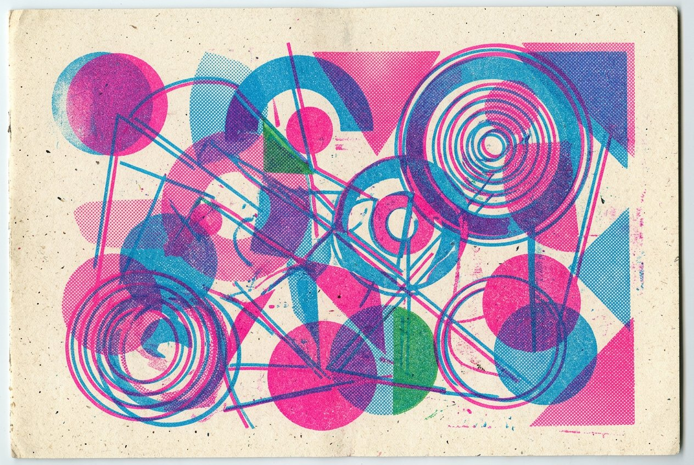

Riso / Risograph Style
The web version of a duplicator print: fluorescent spot colors that blend like wet ink (multiply), halftone dots instead of gradients, and color layers that never quite register. Imperfection is the brand.

#F4F1E8#FF48B0#0F6FC6#FFE44D#00A99D#1D1C19THE OVERPRINT RULE: every colored layer gets mix-blend-mode:multiply. Pink × blue = purple, blue × yellow = green. That second-pass color is the entire aesthetic — no extra ink, only overlaps.
Set it
loud.
Archivo Black, ALL CAPS, tight leading (0.9–1.0). Riso posters shout with mass, not size alone — outline (“ghost”) treatments cost no ink and look like a missed pass.
Body · Archivo
Mid-weight, no frills — the type is already loud enough.
Specs · Space Mono
DATES / EDITIONS / PRINT NOTES → mono, 13px, leading 1.7.
.mis{position:relative; color:#1D1C19}
.mis::before{
content:attr(data-text);
position:absolute; inset:0;
color:#FF48B0;
transform:translate(4px,-3px);
mix-blend-mode:multiply;
z-index:-1;
}
.halftone{
background:
radial-gradient(#FF48B0 1.2px,
transparent 1.6px) 0 0/5px 5px;
opacity:.85; transform:rotate(8deg);
}
/* rotate the dot grid slightly —
rosettes appear, like on press */
img.riso{
filter:grayscale(1) contrast(1.15)
brightness(1.05);
mix-blend-mode:multiply;
}
.riso-wrap{position:relative; isolation:isolate}
.riso-wrap::after{ /* tint pass */
content:""; position:absolute; inset:0;
background:#0F6FC6; mix-blend-mode:multiply;
opacity:.65;
}
body::after{
content:""; position:fixed; inset:0;
pointer-events:none;
mix-blend-mode:multiply; opacity:.16;
background:url("noise.svg"); /* SVG
feTurbulence, fractalNoise, bf .9 */
}
::after overlays, never inside the text layer.Are.na tags: “riso”, “risograph” · Instagram-era staples: Spacejunk, Risomono, Kiosk · keywords: overprint, misregistration, spot ink, fluoro pink, halftone rosette, A5 zine cover.